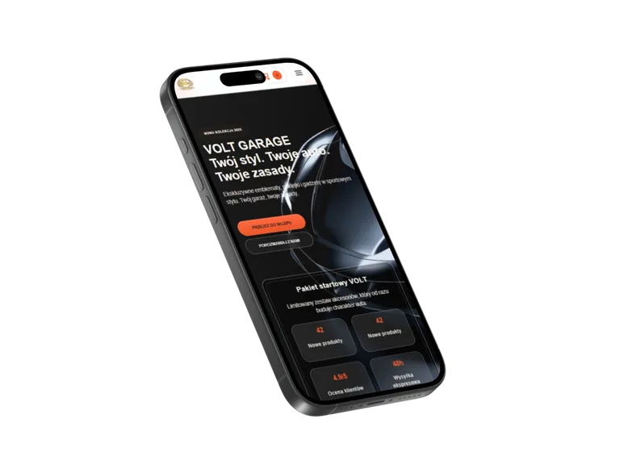
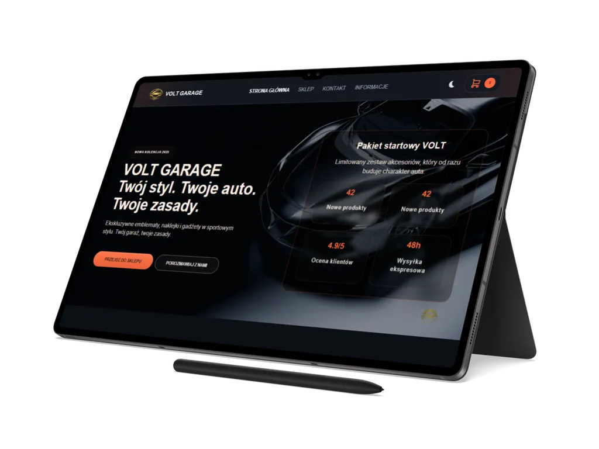

01
Volt Garage
Statyczny, wielostronicowy front-end sklepu z akcesoriami motoryzacyjnymi, łączący lokalny katalog produktów, koszyk po stronie klienta, checkout i podstawy PWA.
Przegląd projektu
Volt Garage pokazuje realistyczny zakres statycznego front-endu e-commerce: od wielostronicowej struktury sklepu po katalog produktów, koszyk i checkout obsługiwane w przeglądarce.
Projekt został przygotowany jako referencyjna realizacja portfolio: bez backendu zamówień, SSR i serwerowego checkoutu, ale z dopracowaną warstwą interfejsu, danych lokalnych, SEO i podstaw publikacji statycznej.
Zakres obejmuje stronę główną, sklep, szczegóły produktu, nowości, promocje, kolekcje, kontakt, koszyk, checkout oraz strony prawne. Dzięki temu case study pokazuje nie tylko pojedynczy landing, ale pełniejszą architekturę sklepu internetowego w wersji front-endowej.
Repozytorium zawiera również elementy wspierające wdrożenie statyczne: bundling CSS
i JS, generowanie katalogu dist, konfigurację nagłówków i przekierowań,
manifest, Service Workera oraz stronę offline.
E-commerceMotoryzacjaSklep onlineProdukty
Zakres i akcenty
Case study koncentruje się na praktycznych elementach sklepu: danych produktowych, interakcji użytkownika i standardzie przygotowania front-endu.
02
Filtry, koszyk i checkout
03
SEO, dostępność i PWA
Technologie i standard
Projekt został zbudowany w lekkim stacku HTML, CSS i Vanilla JavaScript, z modułową logiką front-endową oraz narzędziami wspierającymi jakość kodu.
Warstwa runtime opiera się na HTML5, CSS z partialami, ES Modules i lokalnych danych produktowych w JSON. Po stronie utrzymania projekt korzysta z procesu buildowego, walidacji kodu, formatowania oraz skryptów QA wspierających spójność i kontrolę jakości.
- wielostronicowa struktura sklepu i semantyczne szablony widoków,
- moduły produktów, filtrów, koszyka, formularzy i obsługi PWA,
-
build statyczny z minifikacją assetów i generowaniem katalogu
dist.


Dalszy krok
Przejdź do wersji live sklepu albo wróć do pełnego portfolio.
Volt Garage pokazuje zakres pracy nad statycznym front-endem sklepu: od interfejsu katalogu i koszyka po SEO, dostępność, PWA i przygotowanie projektu do publikacji.